Portraits of sitting members of Congress are official photographs in the public domain. Other candidate photos come from Wikimedia Commons under the license shown; click the source for the original file. To report a wrong photo, email the Wausau Pilot & Review newsroom.
| Aaron Bean (FL) | U.S. Congress | U.S. Congress | Public domain | |
| Aaron Ford (NV) | Wikimedia Commons | United States Mission to Geneva, United States Department of State | Public domain | |
| Abraham Hamadeh (AZ) | U.S. Congress | U.S. Congress | Public domain | |
| Adam Gray (CA) | U.S. Congress | U.S. Congress | Public domain | |
| Adam Hamawy (NJ) | Wikimedia Commons | Office of Congresswoman Bonnie Watson Coleman | Public domain | |
| Adam Smith (WA) | U.S. Congress | U.S. Congress | Public domain | |
| Addison McDowell (NC) | U.S. Congress | U.S. Congress | Public domain | |
| Adelita Grijalva (AZ) | Wikimedia Commons | Damien Salas, Office of the Clerk U.S.House of Representatives | Public domain | |
| Adrian Boafo (MD) | Wikimedia Commons | Maryland GovPics | CC BY 2.0 | |
| Adrian Smith (NE) | U.S. Congress | U.S. Congress | Public domain | |
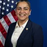 | Aisha Wahab (CA) | Wikimedia Commons | U.S. House of Representatives | Public domain |
| Alexandria Ocasio-Cortez (NY) | U.S. Congress | U.S. Congress | Public domain | |
| Alma Adams (NC) | U.S. Congress | U.S. Congress | Public domain | |
| Ami Bera (CA) | U.S. Congress | U.S. Congress | Public domain | |
| Amish Shah (AZ) | Wikimedia Commons | Gage Skidmore | CC BY-SA 3.0 | |
| Amy Acton (OH) | Wikimedia Commons | Patricio101 | CC0 | |
| Amy Klobuchar (MN) | U.S. Congress | U.S. Congress | Public domain | |
| Analilia Mejia (NJ) | Wikimedia Commons | U.S. House of Representatives | Public domain | |
| André Carson (IN) | U.S. Congress | U.S. Congress | Public domain | |
| Andrea Salinas (OR) | U.S. Congress | U.S. Congress | Public domain | |
| Andrew Clyde (GA) | U.S. Congress | U.S. Congress | Public domain | |
| Andrew Garbarino (NY) | U.S. Congress | U.S. Congress | Public domain | |
| Andy Barr (KY) | U.S. Congress | U.S. Congress | Public domain | |
| Andy Biggs (AZ) | U.S. Congress | U.S. Congress | Public domain | |
| Andy Harris (MD) | U.S. Congress | U.S. Congress | Public domain | |
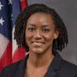 | Angie Nixon (FL) | Wikimedia Commons | Florida House of Representatives | Public domain |
| Ann Wagner (MO) | U.S. Congress | U.S. Congress | Public domain | |
| Anna Paulina Luna (FL) | U.S. Congress | U.S. Congress | Public domain | |
| April McClain Delaney (MD) | U.S. Congress | U.S. Congress | Public domain | |
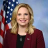 | Ashley Hinson (IA) | U.S. Congress | U.S. Congress | Public domain |
| Ashley Moody (FL) | U.S. Congress | U.S. Congress | Public domain | |
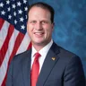 | August Pfluger (TX) | U.S. Congress | U.S. Congress | Public domain |
| Austin Scott (GA) | U.S. Congress | U.S. Congress | Public domain | |
| Ayanna S. Pressley (MA) | U.S. Congress | U.S. Congress | Public domain | |
| Barry Moore (AL) | U.S. Congress | U.S. Congress | Public domain | |
| Becca Balint (VT) | U.S. Congress | U.S. Congress | Public domain | |
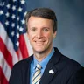 | Ben Cline (VA) | U.S. Congress | U.S. Congress | Public domain |
| Ben McAdams (UT) | Wikimedia Commons | United States Congress | Public domain | |
| Ben Ray Luján (NM) | U.S. Congress | U.S. Congress | Public domain | |
| Bennie Thompson (MS) | U.S. Congress | U.S. Congress | Public domain | |
| Bert Mizusawa (VA) | Wikimedia Commons | U.S. Army | Public domain | |
| Beth Macy (VA) | Wikimedia Commons | Meredith Roller | CC BY 4.0 | |
| Beth Van Duyne (TX) | U.S. Congress | U.S. Congress | Public domain | |
| Betty McCollum (MN) | U.S. Congress | U.S. Congress | Public domain | |
| Bill Foster (IL) | U.S. Congress | U.S. Congress | Public domain | |
| Bill Hagerty (TN) | U.S. Congress | U.S. Congress | Public domain | |
| Bill Huizenga (MI) | U.S. Congress | U.S. Congress | Public domain | |
| Bill Keating (MA) | Wikimedia Commons | U.S. House of Representatives — Office of the Clerk | Public domain | |
| Blake Moore (UT) | U.S. Congress | U.S. Congress | Public domain | |
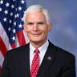 | Bob Latta (OH) | Wikimedia Commons | House Creative Services | Public domain |
| Bob Onder (MO) | Wikimedia Commons | Ike Hayman, House Creative Services | Public domain | |
| Bobby Scott (VA) | U.S. Congress | U.S. Congress | Public domain | |
| Brad Finstad (MN) | U.S. Congress | U.S. Congress | Public domain | |
| Brad Knott (NC) | U.S. Congress | U.S. Congress | Public domain | |
| Brad Lander (NY) | Wikimedia Commons | Tessa Bury | CC BY 4.0 | |
| Brad Little (ID) | Wikimedia Commons | Phil White/Office of the Governor of Idaho. | CC BY-SA 4.0 | |
| Brad Schneider (IL) | U.S. Congress | U.S. Congress | Public domain | |
| Brad Sherman (CA) | U.S. Congress | U.S. Congress | Public domain | |
| Brandon Gill (TX) | U.S. Congress | U.S. Congress | Public domain | |
| Brendan Boyle (PA) | U.S. Congress | U.S. Congress | Public domain | |
| Brent Taylor (TN) | Wikimedia Commons | GatewayPolitics | CC BY-SA 4.0 | |
| Brenton Awa (HI) | Wikimedia Commons | Sgt. Julian Elliott-Drouin | Public domain | |
| Brett Guthrie (KY) | U.S. Congress | U.S. Congress | Public domain | |
| Brian Babin (TX) | U.S. Congress | U.S. Congress | Public domain | |
| Brian Fitzpatrick (PA) | U.S. Congress | U.S. Congress | Public domain | |
| Brian Jack (GA) | U.S. Congress | U.S. Congress | Public domain | |
| Brian Mast (FL) | U.S. Congress | U.S. Congress | Public domain | |
| Brittany Pettersen (CO) | U.S. Congress | U.S. Congress | Public domain | |
| Bruce Blakeman (NY) | Wikimedia Commons | Arthur Raslich | CC BY-SA 4.0 | |
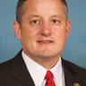 | Bruce Westerman (AR) | U.S. Congress | U.S. Congress | Public domain |
| Bryan Steil (WI) | U.S. Congress | U.S. Congress | Public domain | |
| Byron Donalds (FL) | U.S. Congress | U.S. Congress | Public domain | |
| Cait Conley (NY) | Wikimedia Commons | Cybersecurity and Infrastructure Security Agency | Public domain | |
| Carlos Giménez (FL) | U.S. Congress | U.S. Congress | Public domain | |
| Carol Miller (WV) | U.S. Congress | U.S. Congress | Public domain | |
| Celeste Maloy (UT) | U.S. Congress | U.S. Congress | Public domain | |
| Charles Booker (KY) | Wikimedia Commons | Breadwin | CC BY-SA 4.0 | |
| Chellie Pingree (ME) | U.S. Congress | U.S. Congress | Public domain | |
| Chris Beck (OR) | Wikimedia Commons | MetroEast Community Media | CC BY 4.0 | |
| Chris Coons (DE) | Wikimedia Commons | U.S. Embassy in the Philippines | Public domain | |
| Chris Deluzio (PA) | U.S. Congress | U.S. Congress | Public domain | |
| Chris Jones (AR) | Wikimedia Commons | Unknown authorUnknown author | CC0 | |
| Chris Pappas (NH) | U.S. Congress | U.S. Congress | Public domain | |
| Chris Rabb (PA) | Wikimedia Commons | Yolanda Cheers | CC0 | |
| Chris Smith (NJ) | U.S. Congress | U.S. Congress | Public domain | |
| Chrissy Houlahan (PA) | U.S. Congress | U.S. Congress | Public domain | |
| Christian Menefee (TX) | Wikimedia Commons | Brendan O'Hara | Public domain | |
| Christina Bohannan (IA) | Wikimedia Commons | Iowa General Assembly | Copyrighted free use | |
| Christine Drazan (OR) | Wikimedia Commons | Oregon State University | CC BY-SA 2.0 | |
| Chuck Fleischmann (TN) | U.S. Congress | U.S. Congress | Public domain | |
| Chuck Gray (WY) | Wikimedia Commons | Gage Skidmore | CC BY-SA 2.0 | |
| Cindy Holscher (KS) | Wikimedia Commons | Catboy69 | CC BY 4.0 | |
| Cindy Hyde-Smith (MS) | U.S. Congress | U.S. Congress | Public domain | |
| Claire Valdez (NY) | Wikimedia Commons | Metropolitan Transportation Authority | CC BY 4.0 | |
| Claudia Tenney (NY) | U.S. Congress | U.S. Congress | Public domain | |
| Clay Fuller (GA) | Wikimedia Commons | Brian Thorpe | Public domain | |
| Clay Higgins (LA) | U.S. Congress | U.S. Congress | Public domain | |
| Cliff Bentz (OR) | U.S. Congress | U.S. Congress | Public domain | |
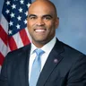 | Colin Allred (TX) | Wikimedia Commons | Ike Hayman | Public domain |
| Cory Booker (NJ) | U.S. Congress | U.S. Congress | Public domain | |
| Craig Goldman (TX) | U.S. Congress | U.S. Congress | Public domain | |
| Cyndi Munson (OK) | Wikimedia Commons | Unknown authorUnknown author | Public domain | |
| Dale Strong (AL) | U.S. Congress | U.S. Congress | Public domain | |
| Dan Meuser (PA) | Wikimedia Commons | House Creative Services | Public domain | |
| Dan Osborn (NE) | Wikimedia Commons | Ramseywill | CC BY 4.0 | |
| Dan Sullivan (AK) | U.S. Congress | U.S. Congress | Public domain | |
| Daniel K. Biss (IL) | Wikimedia Commons | Paul Goyette | CC BY 4.0 | |
| Darializa Avila Chevalier (NY) | Wikimedia Commons | A LO CLARO and Indhira Baez | CC BY 4.0 | |
| Darin LaHood (IL) | U.S. Congress | U.S. Congress | Public domain | |
| Darline Graham (SC) | Wikimedia Commons | Rosa Pineda, United States Senate | Public domain | |
| Darren Bailey (IL) | Wikimedia Commons | Cobiblair | CC BY-SA 4.0 | |
| Darren Soto (FL) | U.S. Congress | U.S. Congress | Public domain | |
| Dave Min (CA) | U.S. Congress | U.S. Congress | Public domain | |
| David Brock Smith (OR) | Wikimedia Commons | Oregon Secretary of State from Portland, United States | CC BY 2.0 | |
| David J. Taylor (OH) | U.S. Congress | U.S. Congress | Public domain | |
| David Jolly (FL) | Wikimedia Commons | http://memberguide.gpo.gov/113/RP/Jolly | Public domain | |
| David Kustoff (TN) | U.S. Congress | U.S. Congress | Public domain | |
| David P. Joyce (OH) | U.S. Congress | U.S. Congress | Public domain | |
| David Rouzer (NC) | U.S. Congress | U.S. Congress | Public domain | |
| David Valadao (CA) | U.S. Congress | U.S. Congress | Public domain | |
| Deb Haaland (NM) | Wikimedia Commons | Department of the Interior | Public domain | |
| Debbie Dingell (MI) | U.S. Congress | U.S. Congress | Public domain | |
| Debbie Wasserman Schultz (FL) | U.S. Congress | U.S. Congress | Public domain | |
| Deborah Ross (NC) | U.S. Congress | U.S. Congress | Public domain | |
| Delia Ramirez (IL) | U.S. Congress | U.S. Congress | Public domain | |
| Derek Merrin (OH) | Wikimedia Commons | SchOg | CC BY 4.0 | |
| Derek Schmidt (KS) | U.S. Congress | U.S. Congress | Public domain | |
| Derek Tran (CA) | U.S. Congress | U.S. Congress | Public domain | |
| Derrick Van Orden (WI) | U.S. Congress | U.S. Congress | Public domain | |
| Diana Harshbarger (TN) | U.S. Congress | U.S. Congress | Public domain | |
| Dina Titus (NV) | U.S. Congress | U.S. Congress | Public domain | |
| Don Beyer (VA) | Wikimedia Commons | U.S. House of Representatives | Public domain | |
| Donald Norcross (NJ) | U.S. Congress | U.S. Congress | Public domain | |
| Donavan McKinney (MI) | Wikimedia Commons | City of Detroit | Public domain | |
| Donna Miller (IL) | Wikimedia Commons | Paul Goyette | CC BY 2.0 | |
| Doris Matsui (CA) | U.S. Congress | U.S. Congress | Public domain | |
| Doug Jones (AL) | Wikimedia Commons | U.S. Senate Photographic Studio-Renee Bouchard | Public domain | |
| Ed Case (HI) | U.S. Congress | U.S. Congress | Public domain | |
| Ed Gallrein (KY) | Wikimedia Commons | Gage Skidmore | CC BY-SA 4.0 | |
| Edward J. Markey (MA) | U.S. Congress | U.S. Congress | Public domain | |
| Eileen Laubacher (CO) | Wikimedia Commons | U.S. Navy | Public domain | |
| Elaine Luria (VA) | Wikimedia Commons | U.S. House of Representatives | Public domain | |
| Eli Crane (AZ) | U.S. Congress | U.S. Congress | Public domain | |
| Emanuel Cleaver (MO) | U.S. Congress | U.S. Congress | Public domain | |
| Emilia Sykes (OH) | U.S. Congress | U.S. Congress | Public domain | |
| Emily Randall (WA) | U.S. Congress | U.S. Congress | Public domain | |
| Eric Burlison (MO) | U.S. Congress | U.S. Congress | Public domain | |
| Eric Pratt (MN) | Wikimedia Commons | Minnesota Senate Republican Caucus | CC BY 2.0 | |
| Eric Sorensen (IL) | U.S. Congress | U.S. Congress | Public domain | |
| Erin Houchin (IN) | U.S. Congress | U.S. Congress | Public domain | |
| Eugene Vindman (VA) | U.S. Congress | U.S. Congress | Public domain | |
| Frank Lucas (OK) | U.S. Congress | U.S. Congress | Public domain | |
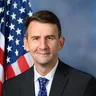 | Frank Mrvan (IN) | U.S. Congress | U.S. Congress | Public domain |
| Frank Pallone (NJ) | U.S. Congress | U.S. Congress | Public domain | |
| Fred Clark (WI) | Wikimedia Commons | Jeremy Oswald | CC BY-SA 4.0 | |
| Fred Wellman (MO) | Wikimedia Commons | Frederic Poag | CC BY 4.0 | |
| Frederick Haynes III (TX) | Wikimedia Commons | Calvary Baptist Church Jamaica, NY | CC BY 3.0 | |
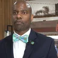 | Fredrick Love (AR) | Wikimedia Commons | Arkansas Farm Bureau | CC BY 3.0 |
| French Hill (AR) | Wikimedia Commons | Brian Thorpe, House Creative Services | Public domain | |
| Gabe Evans (CO) | U.S. Congress | U.S. Congress | Public domain | |
| Gabe Vasquez (NM) | U.S. Congress | U.S. Congress | Public domain | |
| Gary Palmer (AL) | U.S. Congress | U.S. Congress | Public domain | |
| Gay Valimont (FL) | Wikimedia Commons | Unknown authorUnknown author | CC BY-SA 4.0 | |
| George Latimer (NY) | U.S. Congress | U.S. Congress | Public domain | |
| George Whitesides (CA) | U.S. Congress | U.S. Congress | Public domain | |
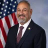 | Gil Cisneros (CA) | Wikimedia Commons | House Creative Services | Public domain |
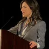 | Gina Hinojosa (TX) | Wikimedia Commons | RRC1701 | CC0 |
| Glenn Grothman (WI) | U.S. Congress | U.S. Congress | Public domain | |
| Glenn Ivey (MD) | U.S. Congress | U.S. Congress | Public domain | |
| Glenn Thompson (PA) | U.S. Congress | U.S. Congress | Public domain | |
| Grace Meng (NY) | U.S. Congress | U.S. Congress | Public domain | |
| Greg Abbott (TX) | Wikimedia Commons | USDAgov | Public domain | |
| Greg Casar (TX) | U.S. Congress | U.S. Congress | Public domain | |
| Greg Landsman (OH) | U.S. Congress | U.S. Congress | Public domain | |
| Greg Murphy (NC) | Wikimedia Commons | U.S. Congress | Public domain | |
| Greg Stanton (AZ) | U.S. Congress | U.S. Congress | Public domain | |
| Greg Steube (FL) | Wikimedia Commons | House Creative Services | Public domain | |
| Gregory Meeks (NY) | U.S. Congress | U.S. Congress | Public domain | |
| Gus Bilirakis (FL) | U.S. Congress | U.S. Congress | Public domain | |
| Guy Reschenthaler (PA) | U.S. Congress | U.S. Congress | Public domain | |
| Gwen Moore (WI) | U.S. Congress | U.S. Congress | Public domain | |
| Hakeem Jeffries (NY) | U.S. Congress | U.S. Congress | Public domain | |
| Hal Rogers (KY) | U.S. Congress | U.S. Congress | Public domain | |
| Hank Johnson (GA) | U.S. Congress | U.S. Congress | Public domain | |
| Hannah Pingree (ME) | Wikimedia Commons | Hannah Pingree for Governor | CC BY 4.0 | |
| Harriet Hageman (WY) | U.S. Congress | U.S. Congress | Public domain | |
| Henry Cuellar (TX) | U.S. Congress | U.S. Congress | Public domain | |
| Herb Conaway (NJ) | Wikimedia Commons | Ike Hayman, House Creative Services | Public domain | |
| Hilda Solis (CA) | Wikimedia Commons | Los Angeles County Board of Supervisors | Public domain | |
| Hillary Scholten (MI) | U.S. Congress | U.S. Congress | Public domain | |
| Houston Gaines (GA) | Wikimedia Commons | Georgia House of Representatives | Public domain | |
| Ilhan Omar (MN) | U.S. Congress | U.S. Congress | Public domain | |
| Jace Yarbrough (TX) | Wikimedia Commons | Lt.Cmdr. Jim Remington | Public domain | |
| Jack Bergman (MI) | U.S. Congress | U.S. Congress | Public domain | |
| Jacqui Irwin (CA) | Wikimedia Commons | California National Guard | CC BY 2.0 | |
| Jahana Hayes (CT) | U.S. Congress | U.S. Congress | Public domain | |
| Jake Auchincloss (MA) | U.S. Congress | U.S. Congress | Public domain | |
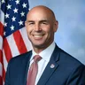 | Jake Ellzey (TX) | U.S. Congress | U.S. Congress | Public domain |
| James Comer (KY) | U.S. Congress | U.S. Congress | Public domain | |
| James P. McGovern (MA) | U.S. Congress | U.S. Congress | Public domain | |
| James Talarico (TX) | Wikimedia Commons | Antonioaesparza | CC BY-SA 4.0 | |
| James Walkinshaw (VA) | Wikimedia Commons | U.S House Office of Photography | Public domain | |
| Jamie Raskin (MD) | U.S. Congress | U.S. Congress | Public domain | |
| Janelle Bynum (OR) | U.S. Congress | U.S. Congress | Public domain | |
| Janelle Stelson (PA) | Wikimedia Commons | James Newton / jnewt-maps on Bluesky | CC BY-SA 4.0 | |
| Jared Huffman (CA) | U.S. Congress | U.S. Congress | Public domain | |
| Jared Moskowitz (FL) | U.S. Congress | U.S. Congress | Public domain | |
| Jasmine Clark (GA) | Wikimedia Commons | Georgia House of Representatives | Public domain | |
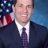 | Jason Crow (CO) | U.S. Congress | U.S. Congress | Public domain |
| Jason Smith (MO) | U.S. Congress | U.S. Congress | Public domain | |
| Jay Obernolte (CA) | U.S. Congress | U.S. Congress | Public domain | |
| JB Pritzker (IL) | Wikimedia Commons | Oscar Garza | CC BY-SA 4.0 | |
| Jeff Crank (CO) | U.S. Congress | U.S. Congress | Public domain | |
| Jeff Hurd (CO) | U.S. Congress | U.S. Congress | Public domain | |
| Jeff Merkley (OR) | U.S. Congress | U.S. Congress | Public domain | |
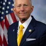 | Jeff Van Drew (NJ) | Wikimedia Commons | Office of Congressman Jeff Van Drew | Public domain |
| Jefferson Shreve (IN) | U.S. Congress | U.S. Congress | Public domain | |
| Jeffrey Hulum (MS) | Wikimedia Commons | Maryland GovPics | CC BY 2.0 | |
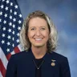 | Jen Kiggans (VA) | Wikimedia Commons | House Creative Services | Public domain |
| Jennifer Balkcom (NC) | Wikimedia Commons | NC House | Public domain | |
| Jennifer McClellan (VA) | U.S. Congress | U.S. Congress | Public domain | |
| Jeremy Moss (MI) | Wikimedia Commons | Anmanwell | CC BY-SA 4.0 | |
| Jerry Carl (AL) | Wikimedia Commons | United States Congress | Public domain | |
| Jill Tokuda (HI) | U.S. Congress | U.S. Congress | Public domain | |
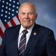 | Jim Baird (IN) | Wikimedia Commons | Brian Thorpe | Public domain |
| Jim Clyburn (SC) | U.S. Congress | U.S. Congress | Public domain | |
| Jim Costa (CA) | U.S. Congress | U.S. Congress | Public domain | |
| Jim Desmond (CA) | Wikimedia Commons | County of San Diego | Public domain | |
| Jim Himes (CT) | U.S. Congress | U.S. Congress | Public domain | |
| Jim Jordan (OH) | U.S. Congress | U.S. Congress | Public domain | |
| Jim Pillen (NE) | Wikimedia Commons | Maryland GovPics | CC BY 4.0 | |
| Jim Risch (ID) | Wikimedia Commons | Senate Foreign Relations Committee | Public domain | |
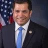 | Jimmy Gomez (CA) | U.S. Congress | U.S. Congress | Public domain |
| Jimmy Panetta (CA) | U.S. Congress | U.S. Congress | Public domain | |
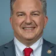 | Jimmy Patronis (FL) | U.S. Congress | U.S. Congress | Public domain |
| Joaquin Castro (TX) | U.S. Congress | U.S. Congress | Public domain | |
| Jocelyn Benson (MI) | Wikimedia Commons | JFM Photo 73 | CC BY 4.0 | |
| Joe Courtney (CT) | U.S. Congress | U.S. Congress | Public domain | |
| Joe Lombardo (NV) | Wikimedia Commons | Gage Skidmore | CC BY-SA 3.0 | |
| Joe Mitchell (IA) | Wikimedia Commons | Iowa General Assembly | Copyrighted free use | |
| Joe Neguse (CO) | U.S. Congress | U.S. Congress | Public domain | |
| Joe Wilson (SC) | U.S. Congress | U.S. Congress | Public domain | |
| John Braun (WA) | Wikimedia Commons | Troy Kirby | CC BY 4.0 | |
| John Carter (TX) | U.S. Congress | U.S. Congress | Public domain | |
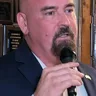 | John Deaton (MA) | Wikimedia Commons | Jeff Dranetz | CC BY 3.0 |
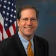 | John E. Sununu (NH) | Wikimedia Commons | Unknown authorUnknown author | Public domain |
| John F. Reed (RI) | U.S. Congress | U.S. Congress | Public domain | |
| John Garamendi (CA) | U.S. Congress | U.S. Congress | Public domain | |
| John Hickenlooper (CO) | U.S. Congress | U.S. Congress | Public domain | |
| John James (MI) | U.S. Congress | U.S. Congress | Public domain | |
| John Joyce (PA) | U.S. Congress | U.S. Congress | Public domain | |
| John Mannion (NY) | U.S. Congress | U.S. Congress | Public domain | |
| John McGuire (VA) | U.S. Congress | U.S. Congress | Public domain | |
| John Moolenaar (MI) | U.S. Congress | U.S. Congress | Public domain | |
| John Rutherford (FL) | U.S. Congress | U.S. Congress | Public domain | |
| Johnny Olszewski (MD) | U.S. Congress | U.S. Congress | Public domain | |
| Jon Husted (OH) | Wikimedia Commons | United States Senate | Public domain | |
| Jon Ossoff (GA) | U.S. Congress | U.S. Congress | Public domain | |
| Jonathan Jackson (IL) | U.S. Congress | U.S. Congress | Public domain | |
| Joseph Morelle (NY) | U.S. Congress | U.S. Congress | Public domain | |
| Josh Brecheen (OK) | U.S. Congress | U.S. Congress | Public domain | |
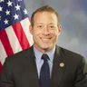 | Josh Gottheimer (NJ) | U.S. Congress | U.S. Congress | Public domain |
| Josh Green (HI) | Wikimedia Commons | Aloha102 | CC BY-SA 4.0 | |
| Josh Harder (CA) | U.S. Congress | U.S. Congress | Public domain | |
| Josh Riley (NY) | U.S. Congress | U.S. Congress | Public domain | |
| Josh Shapiro (PA) | Wikimedia Commons | Maryland GovPics | CC BY 2.0 | |
| Joyce Beatty (OH) | U.S. Congress | U.S. Congress | Public domain | |
| Juan Ciscomani (AZ) | U.S. Congress | U.S. Congress | Public domain | |
| Juan Vargas (CA) | U.S. Congress | U.S. Congress | Public domain | |
| Judy Chu (CA) | U.S. Congress | U.S. Congress | Public domain | |
| Julia Letlow (LA) | U.S. Congress | U.S. Congress | Public domain | |
| Juliana Stratton (IL) | Wikimedia Commons | Sgt. Trenton Fouche | Public domain | |
| Julie Fedorchak (ND) | U.S. Congress | U.S. Congress | Public domain | |
| Justin Pearson (TN) | Wikimedia Commons | TrentBenge | CC BY-SA 4.0 | |
| Kat Cammack (FL) | U.S. Congress | U.S. Congress | Public domain | |
| Katherine M. Clark (MA) | U.S. Congress | U.S. Congress | Public domain | |
| Kathy Castor (FL) | U.S. Congress | U.S. Congress | Public domain | |
| Kathy Hochul (NY) | Wikimedia Commons | Metropolitan Transportation Authority | CC BY 4.0 | |
| Katie Hobbs (AZ) | Wikimedia Commons | Gage Skidmore from Surprise, AZ, United States of America | CC BY-SA 4.0 | |
| Keisha Lance Bottoms (GA) | Wikimedia Commons | Executive Office of the President of the United States | Public domain | |
| Keith Self (TX) | U.S. Congress | U.S. Congress | Public domain | |
| Kelly Ayotte (NH) | Wikimedia Commons | Staff Sgt. David Marquis | Public domain | |
| Kelly Morrison (MN) | U.S. Congress | U.S. Congress | Public domain | |
| Ken Calvert (CA) | U.S. Congress | U.S. Congress | Public domain | |
| Ken Paxton (TX) | Wikimedia Commons | Gage Skidmore | CC BY-SA 4.0 | |
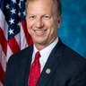 | Kevin Hern (OK) | U.S. Congress | U.S. Congress | Public domain |
| Kevin Kiley (CA) | U.S. Congress | U.S. Congress | Public domain | |
| Kevin Lincoln (CA) | Wikimedia Commons | City of Stockton | Public domain | |
| Kevin Mullin (CA) | U.S. Congress | U.S. Congress | Public domain | |
| Kim Schrier (WA) | U.S. Congress | U.S. Congress | Public domain | |
| Kristen McDonald Rivet (MI) | U.S. Congress | U.S. Congress | Public domain | |
| Kweisi Mfume (MD) | U.S. Congress | U.S. Congress | Public domain | |
| La Shawn Ford (IL) | Wikimedia Commons | US Department of Education | CC BY 2.0 | |
| LaMonica McIver (NJ) | U.S. Congress | U.S. Congress | Public domain | |
| Lance Gooden (TX) | U.S. Congress | U.S. Congress | Public domain | |
| Larry Rhoden (SD) | Wikimedia Commons | U.S. Embassy Jerusalem | CC BY 2.0 | |
| Lateefah Simon (CA) | U.S. Congress | U.S. Congress | Public domain | |
| Laura Friedman (CA) | U.S. Congress | U.S. Congress | Public domain | |
| Laura Gillen (NY) | U.S. Congress | U.S. Congress | Public domain | |
| Laurel Lee (FL) | U.S. Congress | U.S. Congress | Public domain | |
| Lauren Boebert (CO) | U.S. Congress | U.S. Congress | Public domain | |
| Lauren Underwood (IL) | U.S. Congress | U.S. Congress | Public domain | |
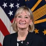 | Laurie Buckhout (NC) | Wikimedia Commons | U.S. Department of Defense | Public domain |
| Leela Gray (FL) | Wikimedia Commons | U.S. Department of Defense | Public domain | |
| Lily Tang Williams (NH) | Wikimedia Commons | Gage Skidmore | CC BY-SA 3.0 | |
| Linda Sánchez (CA) | U.S. Congress | U.S. Congress | Public domain | |
| Lindsay James (IA) | Wikimedia Commons | Iowa Legislative Assembly | Copyrighted free use | |
| Lisa Demuth (MN) | Wikimedia Commons | Lisa Demuth for Governor | CC0 | |
| Lisa McClain (MI) | U.S. Congress | U.S. Congress | Public domain | |
| Lizzie Fletcher (TX) | U.S. Congress | U.S. Congress | Public domain | |
| Lloyd Smucker (PA) | U.S. Congress | U.S. Congress | Public domain | |
| Lois Frankel (FL) | U.S. Congress | U.S. Congress | Public domain | |
| Lori Loureiro Trahan (MA) | U.S. Congress | U.S. Congress | Public domain | |
| Lou Correa (CA) | Wikimedia Commons | Leah Herman, House Creative Services | Public domain | |
| Lucy McBath (GA) | U.S. Congress | U.S. Congress | Public domain | |
| Luke Bronin (CT) | Wikimedia Commons | Dannel Malloy | CC BY 2.0 | |
| Luz Rivas (CA) | U.S. Congress | U.S. Congress | Public domain | |
| Madeleine Dean (PA) | U.S. Congress | U.S. Congress | Public domain | |
| Maggie Goodlander (NH) | U.S. Congress | U.S. Congress | Public domain | |
| Mai Vang (CA) | Wikimedia Commons | Sacramento City Council | Public domain | |
| Manny Rutinel (CO) | Wikimedia Commons | Andybosselman | CC BY-SA 4.0 | |
| Marcy Kaptur (OH) | U.S. Congress | U.S. Congress | Public domain | |
| Maria Elvira Salazar (FL) | U.S. Congress | U.S. Congress | Public domain | |
| Mariannette Miller-Meeks (IA) | U.S. Congress | U.S. Congress | Public domain | |
| Marie Gluesenkamp Perez (WA) | U.S. Congress | U.S. Congress | Public domain | |
| Marilyn Strickland (WA) | U.S. Congress | U.S. Congress | Public domain | |
| Mario Diaz-Balart (FL) | U.S. Congress | U.S. Congress | Public domain | |
| Mark Alford (MO) | U.S. Congress | U.S. Congress | Public domain | |
| Mark Baisley (CO) | Wikimedia Commons | Colorado Senate GOP | Public domain | |
| Mark DeSaulnier (CA) | U.S. Congress | U.S. Congress | Public domain | |
| Mark Harris (NC) | U.S. Congress | U.S. Congress | Public domain | |
| Mark Lamb (AZ) | Wikimedia Commons | Gage Skidmore from Surprise, AZ, United States of America | CC BY-SA 4.0 | |
| Mark Messmer (IN) | U.S. Congress | U.S. Congress | Public domain | |
| Mark Pocan (WI) | U.S. Congress | U.S. Congress | Public domain | |
| Mark Takano (CA) | U.S. Congress | U.S. Congress | Public domain | |
| Mark Tedford (OK) | Wikimedia Commons | State of Oklahoma’s Legislative Service Bureau, Photo Division | Public domain | |
| Mark Teixeira (TX) | Wikimedia Commons | Keith Allison | CC BY-SA 2.0 | |
| Mark Warner (VA) | U.S. Congress | U.S. Congress | Public domain | |
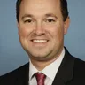 | Marlin Stutzman (IN) | U.S. Congress | U.S. Congress | Public domain |
| Marni von Wilpert (CA) | Wikimedia Commons | City of San Diego | Public domain | |
| Marquita Bradshaw (TN) | Wikimedia Commons | Walker Kinsler | CC BY-SA 4.0 | |
| Marsha Blackburn (TN) | U.S. Congress | U.S. Congress | Public domain | |
| Marty Jackley (SD) | Wikimedia Commons | US District of South Dakota | Public domain | |
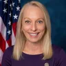 | Mary Gay Scanlon (PA) | U.S. Congress | U.S. Congress | Public domain |
| Mary Miller (IL) | U.S. Congress | U.S. Congress | Public domain | |
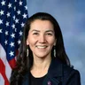 | Mary Peltola (AK) | Wikimedia Commons | Leah Herman, House Creative Services | Public domain |
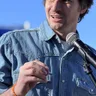 | Matt Little (MN) | Wikimedia Commons | Travellers & Tinkers | CC BY-SA 4.0 |
| Matt Van Epps (TN) | Wikimedia Commons | House Creative Services | Public domain | |
| Matthew Dunlap (ME) | Wikimedia Commons | VM143 | CC BY-SA 4.0 | |
| Maura Healey (MA) | Wikimedia Commons | Governors office | Public domain | |
| Max Miller (OH) | U.S. Congress | U.S. Congress | Public domain | |
| Maxine Dexter (OR) | U.S. Congress | U.S. Congress | Public domain | |
| Maxine Waters (CA) | U.S. Congress | U.S. Congress | Public domain | |
| Maxwell Frost (FL) | U.S. Congress | U.S. Congress | Public domain | |
| Melanie Stansbury (NM) | U.S. Congress | U.S. Congress | Public domain | |
| Melat Kiros (CO) | Wikimedia Commons | Andra Turner | CC BY-SA 4.0 | |
| Melissa Bean (IL) | Wikimedia Commons | House of Represenatatives | Public domain | |
| Micah Lasher (NY) | Wikimedia Commons | Lance Cpl. Steven Wells | Public domain | |
| Michael A. Rulli (OH) | U.S. Congress | U.S. Congress | Public domain | |
| Michael Baumgartner (WA) | U.S. Congress | U.S. Congress | Public domain | |
| Michael Cloud (TX) | U.S. Congress | U.S. Congress | Public domain | |
| Michael Guest (MS) | U.S. Congress | U.S. Congress | Public domain | |
| Michael Whatley (NC) | Wikimedia Commons | Gage Skidmore | CC BY-SA 4.0 | |
| Michelle Fischbach (MN) | U.S. Congress | U.S. Congress | Public domain | |
| Mike Beltran (FL) | Wikimedia Commons | Florida House of Representatives | Public domain | |
| Mike Bost (IL) | U.S. Congress | U.S. Congress | Public domain | |
| Mike Carey (OH) | U.S. Congress | U.S. Congress | Public domain | |
| Mike Collins (GA) | U.S. Congress | U.S. Congress | Public domain | |
| Mike Ezell (MS) | U.S. Congress | U.S. Congress | Public domain | |
| Mike Flood (NE) | U.S. Congress | U.S. Congress | Public domain | |
| Mike Haridopolos (FL) | U.S. Congress | U.S. Congress | Public domain | |
| Mike Johnson (LA) | U.S. Congress | U.S. Congress | Public domain | |
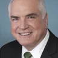 | Mike Kelly (PA) | U.S. Congress | U.S. Congress | Public domain |
| Mike Kennedy (UT) | U.S. Congress | U.S. Congress | Public domain | |
| Mike Lawler (NY) | Wikimedia Commons | U.S. House of Representatives | Public domain | |
| Mike Levin (CA) | U.S. Congress | U.S. Congress | Public domain | |
| Mike Mazzei (OK) | Wikimedia Commons | Oklahoma State Senate | Public domain | |
| Mike McGuire (CA) | Wikimedia Commons | State of California | Public domain | |
| Mike Quigley (IL) | U.S. Congress | U.S. Congress | Public domain | |
| Mike Rogers (AL) | U.S. Congress | U.S. Congress | Public domain | |
| Mike Rogers (MI) | Wikimedia Commons | P.J. Siquig | Public domain | |
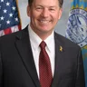 | Mike Rounds (SD) | U.S. Congress | U.S. Congress | Public domain |
| Mike Simpson (ID) | U.S. Congress | U.S. Congress | Public domain | |
| Mike Thompson (CA) | U.S. Congress | U.S. Congress | Public domain | |
| Mike Turner (OH) | Wikimedia Commons | Brendan O'Hara, House Creative Services | Public domain | |
| Monica De La Cruz (TX) | U.S. Congress | U.S. Congress | Public domain | |
| Morgan Griffith (VA) | Wikimedia Commons | Brendan O'Hara, U.S. House of Representatives Creative Services | Public domain | |
| Morgan McGarvey (KY) | U.S. Congress | U.S. Congress | Public domain | |
| Nanette Barragán (CA) | U.S. Congress | U.S. Congress | Public domain | |
| Nathaniel Moran (TX) | U.S. Congress | U.S. Congress | Public domain | |
| Ned Lamont (CT) | Wikimedia Commons | The Office of Governor Ned Lamont | CC BY-SA 4.0 | |
| Nellie Pou (NJ) | U.S. Congress | U.S. Congress | Public domain | |
| Nick Begich III (AK) | Wikimedia Commons | House Creative Services | Public domain | |
| Nick LaLota (NY) | U.S. Congress | U.S. Congress | Public domain | |
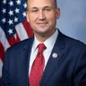 | Nick Langworthy (NY) | Wikimedia Commons | House Creative Services | Public domain |
| Nicole Malliotakis (NY) | U.S. Congress | U.S. Congress | Public domain | |
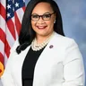 | Nikema Williams (GA) | U.S. Congress | U.S. Congress | Public domain |
| Nikki Budzinski (IL) | U.S. Congress | U.S. Congress | Public domain | |
| Norma Torres (CA) | U.S. Congress | U.S. Congress | Public domain | |
| Oliver Gilbert (FL) | Wikimedia Commons | DeveryR7 | CC BY-SA 4.0 | |
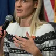 | Paige Cognetti (PA) | Wikimedia Commons | US Department of Labor | CC BY 2.0 |
| Pat Fallon (TX) | U.S. Congress | U.S. Congress | Public domain | |
| Pat Harrigan (NC) | U.S. Congress | U.S. Congress | Public domain | |
| Patty Garcia (IL) | Wikimedia Commons | Paul Goyette | CC BY-SA 4.0 | |
| Paul Gosar (AZ) | U.S. Congress | U.S. Congress | Public domain | |
| Paul LePage (ME) | Wikimedia Commons | Gage Skidmore | CC BY-SA 3.0 | |
| Paul Tonko (NY) | U.S. Congress | U.S. Congress | Public domain | |
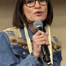 | Peggy Flanagan (MN) | Wikimedia Commons | Travellers & Tinkers | CC BY-SA 4.0 |
| Pete Aguilar (CA) | U.S. Congress | U.S. Congress | Public domain | |
| Pete Ricketts (NE) | U.S. Congress | U.S. Congress | Public domain | |
| Pete Sessions (TX) | U.S. Congress | U.S. Congress | Public domain | |
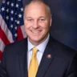 | Pete Stauber (MN) | U.S. Congress | U.S. Congress | Public domain |
| Peter Oberacker (NY) | Wikimedia Commons | NY Senate Photo | CC BY 2.0 | |
| Phil Scott (VT) | Wikimedia Commons | Master Sgt. Sarah Mattison, U.S. Air National Guard | Public domain | |
| Phil Weiser (CO) | Wikimedia Commons | Phil Photos | Public domain | |
| Pia Dandiya (FL) | Wikimedia Commons | Executive Office of the President, White House Office, White House Fellows | Public domain | |
| Pramila Jayapal (WA) | U.S. Congress | U.S. Congress | Public domain | |
| Ralph Alvarado (KY) | Wikimedia Commons | Gage Skidmore | CC BY-SA 3.0 | |
| Randy Fine (FL) | U.S. Congress | U.S. Congress | Public domain | |
| Randy Villegas (CA) | Wikimedia Commons | Maremoto Fund | CC BY 4.0 | |
| Randy Weber (TX) | U.S. Congress | U.S. Congress | Public domain | |
| Rashida Tlaib (MI) | U.S. Congress | U.S. Congress | Public domain | |
| Raul Ruiz (CA) | U.S. Congress | U.S. Congress | Public domain | |
| Rebecca Bennett (NJ) | Wikimedia Commons | Sgt. Mandy Johnson | Public domain | |
| Rebecca Cooke (WI) | Wikimedia Commons | UpNorthNews | CC BY 3.0 | |
| Rhett Marques (AL) | Wikimedia Commons | Alabama Legislature | Public domain | |
| Rich McCormick (GA) | U.S. Congress | U.S. Congress | Public domain | |
| Richard E. Neal (MA) | U.S. Congress | U.S. Congress | Public domain | |
| Richard Hudson (NC) | U.S. Congress | U.S. Congress | Public domain | |
| Richard Ojeda (NC) | Wikimedia Commons | Richard Ojeda, campaign Flickr account | CC BY-SA 4.0 | |
| Richard Pan (CA) | Wikimedia Commons | Dr. Richard Pan from Sacramento, CA, USA | CC BY-SA 2.0 | |
| Rick Allen (GA) | U.S. Congress | U.S. Congress | Public domain | |
| Rick Crawford (AR) | U.S. Congress | U.S. Congress | Public domain | |
| Rick Jackson (GA) | Wikimedia Commons | Cherie Martin | CC BY 4.0 | |
| Rick Larsen (WA) | U.S. Congress | U.S. Congress | Public domain | |
| Riley Moore (WV) | U.S. Congress | U.S. Congress | Public domain | |
| Ritchie Torres (NY) | U.S. Congress | U.S. Congress | Public domain | |
| Ro Khanna (CA) | U.S. Congress | U.S. Congress | Public domain | |
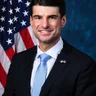 | Rob Bresnahan (PA) | Wikimedia Commons | House Creative Services | Public domain |
| Rob Menendez (NJ) | Wikimedia Commons | U.S. House of Representatives | Public domain | |
| Rob Sand (IA) | Wikimedia Commons | Rob Sand for Governor | CC0 | |
| Rob Wittman (VA) | Wikimedia Commons | Brian Thorpe, House Creative Services | Public domain | |
| Robert Aderholt (AL) | U.S. Congress | U.S. Congress | Public domain | |
| Robert Garcia (CA) | U.S. Congress | U.S. Congress | Public domain | |
| Robin Ficker (MD) | Wikimedia Commons | Maryland GovPics | CC BY 2.0 | |
| Roger Marshall (KS) | U.S. Congress | U.S. Congress | Public domain | |
| Roger Williams (TX) | U.S. Congress | U.S. Congress | Public domain | |
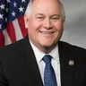 | Ron Estes (KS) | U.S. Congress | U.S. Congress | Public domain |
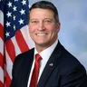 | Ronny Jackson (TX) | U.S. Congress | U.S. Congress | Public domain |
| Rosa DeLauro (CT) | U.S. Congress | U.S. Congress | Public domain | |
| Roy Cooper (NC) | Wikimedia Commons | NetwonsBucket | CC BY-SA 4.0 | |
| Rudy Yakym (IN) | U.S. Congress | U.S. Congress | Public domain | |
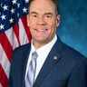 | Russ Fulcher (ID) | U.S. Congress | U.S. Congress | Public domain |
| Russell Fry (SC) | U.S. Congress | U.S. Congress | Public domain | |
| Ryan Fazio (CT) | Wikimedia Commons | James Naleski | CC BY-SA 4.0 | |
| Ryan Mackenzie (PA) | U.S. Congress | U.S. Congress | Public domain | |
| Salud Carbajal (CA) | U.S. Congress | U.S. Congress | Public domain | |
| Sam Forstag (MT) | Wikimedia Commons | Conorhogan16 | CC0 | |
| Sam Liccardo (CA) | U.S. Congress | U.S. Congress | Public domain | |
| Sanford Bishop (GA) | U.S. Congress | U.S. Congress | Public domain | |
| Sara Jacobs (CA) | U.S. Congress | U.S. Congress | Public domain | |
| Sarah Elfreth (MD) | U.S. Congress | U.S. Congress | Public domain | |
| Sarah Huckabee Sanders (AR) | Wikimedia Commons | Gage Skidmore | CC BY-SA 4.0 | |
| Sarah McBride (DE) | U.S. Congress | U.S. Congress | Public domain | |
| Sarah Trone Garriott (IA) | Wikimedia Commons | Iowa General Assembly | Copyrighted free use | |
| Scott Colom (MS) | Wikimedia Commons | The Contrarian | CC BY 4.0 | |
| Scott DesJarlais (TN) | U.S. Congress | U.S. Congress | Public domain | |
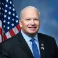 | Scott Fitzgerald (WI) | U.S. Congress | U.S. Congress | Public domain |
| Scott Franklin (FL) | U.S. Congress | U.S. Congress | Public domain | |
| Scott Perry (PA) | U.S. Congress | U.S. Congress | Public domain | |
| Scott Peters (CA) | U.S. Congress | U.S. Congress | Public domain | |
| Scott Wiener (CA) | Wikimedia Commons | California State Senate | Public domain | |
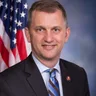 | Sean Casten (IL) | U.S. Congress | U.S. Congress | Public domain |
| Seth Magaziner (RI) | U.S. Congress | U.S. Congress | Public domain | |
| Sharice Davids (KS) | U.S. Congress | U.S. Congress | Public domain | |
| Shelley Moore Capito (WV) | U.S. Congress | U.S. Congress | Public domain | |
| Sheri Biggs (SC) | U.S. Congress | U.S. Congress | Public domain | |
| Sherrod Brown (OH) | Wikimedia Commons | U.S. Senate Photographic Services; Rebecca Hammel | Public domain | |
| Shomari Figures (AL) | U.S. Congress | U.S. Congress | Public domain | |
| Shontel M. Brown (OH) | U.S. Congress | U.S. Congress | Public domain | |
| Stacy Garrity (PA) | Wikimedia Commons | David H. McCormick | Public domain | |
| Stephanie Bice (OK) | U.S. Congress | U.S. Congress | Public domain | |
| Stephen F. Lynch (MA) | U.S. Congress | U.S. Congress | Public domain | |
| Steve Hilton (CA) | Wikimedia Commons | Gage Skidmore | CC BY 2.0 | |
| Steve Scalise (LA) | U.S. Congress | U.S. Congress | Public domain | |
| Steve Toth (TX) | Wikimedia Commons | Jonmallard | CC BY-SA 4.0 | |
| Steve Womack (AR) | U.S. Congress | U.S. Congress | Public domain | |
| Steven Horsford (NV) | U.S. Congress | U.S. Congress | Public domain | |
| Suhas Subramanyam (VA) | U.S. Congress | U.S. Congress | Public domain | |
| Summer Lee (PA) | U.S. Congress | U.S. Congress | Public domain | |
| Susan Collins (ME) | U.S. Congress | U.S. Congress | Public domain | |
| Susie Lee (NV) | U.S. Congress | U.S. Congress | Public domain | |
| Suzan DelBene (WA) | U.S. Congress | U.S. Congress | Public domain | |
| Suzanne Bonamici (OR) | U.S. Congress | U.S. Congress | Public domain | |
| Sydney Kamlager-Dove (CA) | U.S. Congress | U.S. Congress | Public domain | |
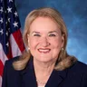 | Sylvia Garcia (TX) | U.S. Congress | U.S. Congress | Public domain |
| Ted Lieu (CA) | U.S. Congress | U.S. Congress | Public domain | |
| Teresa Leger Fernandez (NM) | U.S. Congress | U.S. Congress | Public domain | |
| Terri Sewell (AL) | U.S. Congress | U.S. Congress | Public domain | |
| Thomas Kean Jr. (NJ) | U.S. Congress | U.S. Congress | Public domain | |
| Tim Burchett (TN) | U.S. Congress | U.S. Congress | Public domain | |
| Tim Moore (NC) | U.S. Congress | U.S. Congress | Public domain | |
| Tim Walberg (MI) | U.S. Congress | U.S. Congress | Public domain | |
| Tina Kotek (OR) | Wikimedia Commons | Tony Miller | Public domain | |
| Todd Achilles (ID) | Wikimedia Commons | DL a.k.a. LibertyDad | CC BY 4.0 | |
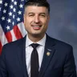 | Tom Barrett (MI) | Wikimedia Commons | Brian Thorpe | Public domain |
| Tom Cole (OK) | U.S. Congress | U.S. Congress | Public domain | |
| Tom Cotton (AR) | U.S. Congress | U.S. Congress | Public domain | |
| Tom Emmer (MN) | U.S. Congress | U.S. Congress | Public domain | |
| Tom McClintock (CA) | U.S. Congress | U.S. Congress | Public domain | |
| Tom Perriello (VA) | Wikimedia Commons | Unknown photographer | Public domain | |
| Tom Tiffany (WI) | Wikimedia Commons | US House of Representatives | Public domain | |
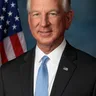 | Tommy Tuberville (AL) | U.S. Congress | U.S. Congress | Public domain |
| Tony Wied (WI) | U.S. Congress | U.S. Congress | Public domain | |
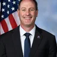 | Tracey Mann (KS) | U.S. Congress | U.S. Congress | Public domain |
| Trent Kelly (MS) | U.S. Congress | U.S. Congress | Public domain | |
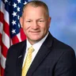 | Trever Nehls (TX) | Wikimedia Commons | House Creative Committee | Public domain |
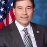 | Troy Balderson (OH) | U.S. Congress | U.S. Congress | Public domain |
| Troy Carter (LA) | U.S. Congress | U.S. Congress | Public domain | |
| Troy Downing (MT) | U.S. Congress | U.S. Congress | Public domain | |
| Ty Masterson (KS) | Wikimedia Commons | NicholasGian25 | CC BY-SA 4.0 | |
| Val Hoyle (OR) | U.S. Congress | U.S. Congress | Public domain | |
| Valerie Foushee (NC) | U.S. Congress | U.S. Congress | Public domain | |
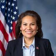 | Veronica Escobar (TX) | U.S. Congress | U.S. Congress | Public domain |
| Vicente Gonzalez (TX) | U.S. Congress | U.S. Congress | Public domain | |
| Victor Marx (CO) | Wikimedia Commons | Gage Skidmore from Surprise, AZ, United States of America | CC BY-SA 2.0 | |
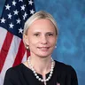 | Victoria Spartz (IN) | U.S. Congress | U.S. Congress | Public domain |
| Vince Fong (CA) | U.S. Congress | U.S. Congress | Public domain | |
| Virginia Foxx (NC) | U.S. Congress | U.S. Congress | Public domain | |
| Vivek Ramaswamy (OH) | Wikimedia Commons | Gage Skidmore | CC BY-SA 4.0 | |
| Warren Davidson (OH) | U.S. Congress | U.S. Congress | Public domain | |
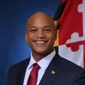 | Wes Moore (MD) | Wikimedia Commons | Maryland State Government | CC BY-SA 4.0 |
| Wesley Bell (MO) | Wikimedia Commons | Brian Thorpe | Public domain | |
| William Lawrence (MI) | Wikimedia Commons | Sabio117 | CC0 | |
| William Timmons (SC) | U.S. Congress | U.S. Congress | Public domain | |
| Xavier Becerra (CA) | Wikimedia Commons | United States Department of Health and Human Services | Public domain | |
| Yassamin Ansari (AZ) | U.S. Congress | U.S. Congress | Public domain | |
| Young Kim (CA) | U.S. Congress | U.S. Congress | Public domain | |
| Yvette Clarke (NY) | U.S. Congress | U.S. Congress | Public domain | |
| Zach Dembo (KY) | Wikimedia Commons | U.S. Navy | Public domain | |
| Zach Nunn (IA) | Wikimedia Commons | House Creative Services | Public domain | |
| Zoe Lofgren (CA) | U.S. Congress | U.S. Congress | Public domain | |
| Zuhdi Jasser (AZ) | Wikimedia Commons | Gage Skidmore | CC BY-SA 3.0 |
.jpg){kind=link}


.jpg){kind=link}


.jpg){kind=link}


.jpg){kind=link}
_(cropped).jpg){kind=link}


.jpg){kind=link}


_(2).jpg){kind=link}

.jpg){kind=link}
.jpg){kind=link}
.jpg){kind=link}
.jpg){kind=link}
.jpg){kind=link}


.jpg){kind=link}


.jpg){kind=link}
.jpg){kind=link}

.jpg){kind=link}

.jpg){kind=link}
.jpg){kind=link}
_(cropped).jpg){kind=link}

.jpg){kind=link}
_(cropped).jpg){kind=link}
.jpg){kind=link}


.jpg){kind=link}


_(crop_4x5).jpg){kind=link}


.jpg){kind=link}
_150302-Z-WQ610-_(16698067641).jpg){kind=link}
.jpg){kind=link}

.jpg){kind=link}

.jpg){kind=link}

.jpg){kind=link}


.jpg){kind=link}
.jpg){kind=link}


.jpg){kind=link}


_1cropped).jpg){kind=link}

.jpg){kind=link}

.jpg){kind=link}


.jpg){kind=link}
.jpg){kind=link}

.jpg){kind=link}
.jpg){kind=link}

.jpg){kind=link}


.jpg){kind=link}
.jpg){kind=link}
.jpg){kind=link}

.jpg){kind=link}
.jpg){kind=link}
_(cropped).jpg){kind=link}


.jpeg){kind=link}


.jpg){kind=link}


.jpg){kind=link}
_(cropped).jpg){kind=link}


.jpg){kind=link}


_(3x4a).jpg){kind=link}


.jpg){kind=link}
_NYS_Senator_Peter_Oberacker_(cropped).jpg){kind=link}


.png){kind=link}


,_RIMPAC_2014_(Image_3_of_3)_(cropped).jpg){kind=link}
.jpg){kind=link}


.png){kind=link}


.jpg){kind=link}
.jpg){kind=link}
.jpg){kind=link}
.jpg){kind=link}
.jpg){kind=link}
.jpg){kind=link}

.jpg){kind=link}


.jpg){kind=link}
.jpg){kind=link}
.jpg){kind=link}
.jpg){kind=link}
.jpg){kind=link}

.jpg){kind=link}


.jpg){kind=link}
_(cropped).jpg){kind=link}
_(cropped).jpg){kind=link}

.jpg){kind=link}